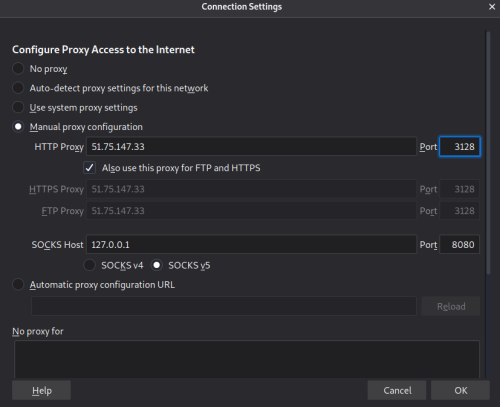

HTTP Proxies
Instead of sending a request directly to a web server, you would send the
request to a proxy server first.
The proxy server works on your behalf to request the web page, and
subsequently sends it back to you. This causes the web server to see the proxy servers address, not
yours.
Types of proxies(can be chained together in order to provide further
obfuscation):• HTTP proxies
• SOCKS proxies
There are two ways to use Proxies ◇ Change the web browser
settings in order to send requests through a Proxy:
▪ List of Proxies:
-
https://hidemy.name/en/proxy-list/ ▪ Firefox: Preferences →
Network Settings → Manual Proxy Configuration
 ◇ Use them through their web pages
▪
https://hide.me/en/proxy